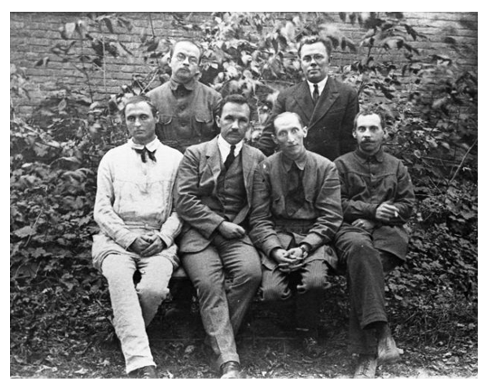

Микола Зеров
1890-1937
«Класична пластика, і контур строгий,
І логіки залізна течія —
Оце твоя, поезіє, дорога»
1890-1937
Микола Зеров – постать справді видатна і легендарна в історії української літератури. Його глибокі знання та аналітичний розум зробили його неперевершеним літературознавцем і гострим полемістом. Як лідер впливового літературного угруповання «неокласиків», Зеров відіграв ключову роль у розвитку українського модернізму, орієнтуючись на кращі зразки європейської та античної класики. Його теоретичні праці та критичні статті заклали міцний фундамент для розуміння літературного процесу того часу.
Особливий слід Микола Зеров залишив як неперевершений майстер сонетної форми. Його сонети відзначаються витонченістю, філософською глибиною та досконалою технікою віршування. Крім того, його блискучі переклади античної поезії відкрили українському читачеві скарби світової літератури, демонструючи не лише лінгвістичну майстерність, але й глибоке розуміння духу першоджерел. Його внесок у розвиток української літературної мови та культури є неоціненним, а його трагічна доля лише додала ореолу легендарності навколо його імені.
Микола Зеров народився 26 квітня 1890 року у місті Зіньків на Полтавщині в сім’ї Костянтина Іраклійовича Зерова, вчителя місцевої двокласної школи, згодом її директора, а з 1905 року – інспектора народних шкіл в Кролевці.
Батько походив із селян і цінував науку. Саме тому він зробив усе, щоб його діти здобули вищу освіту. А з п’яти синів Костянтина Зерова (було ще дві дочки) – троє стали відомими людьми. Крім Миколи – Дмитро, видатний ботанік, академік АН УРСР, Костянтин, гідробіолог, і Михайло, поет, що виступав під псевдонімом Михайло Орест. Мати їхня, Марія Яківна, походила з козацького роду Яреськів з-під Диканьки. У сім’ї в ужитку була російська мова, українська панувала на вулиці. Відомо, що Марія Яківна знала багато народних пісень і гарно їх співала. Із служницею всі розмовляли рідною мовою.
Микола Зеров навчився читати, коли йому було лише 4 роки. Початкову освіту здобув у Зіньківській міській школі. З 1900 по 1903 рік навчався в Охтирській гімназії.
Досягнувши тринадцятилітнього віку, сам приїхав до Києва і після співбесіди з Є. А. Безсмертним – директором Першої Олександрівської класичної гімназії, яка вважалась кращою з усіх гімназій міста, був зарахований до її учнів.
Закінчивши гімназію, з 1908 по 1914 рік навчався на історико-філологічному факультеті університету св. Володимира в Києві, де став одним із провідних діячів київської української студентської громади.
1 серпня 1914 року М. Зерова призначили викладачем історії Златопільської чоловічої, а з жовтня 1916 до весни 1917 року – і жіночої гімназії. Після переїзду до Києва працював учителем у Другій Київській гімназії імені Кирило-Мефодіївського братства, де викладав латину.
З весни 1918-го Микола Зеров близько зійшовся з митцями та вченими, що гуртувалися навколо ректора Української Академії мистецтв – Георгія Нарбута. На зібраннях у помешканні цього видатного українського художника-графіка обговорювалися питання про розвиток української літератури, малярства, графіки, науки. З 1918 по 1920 рік Зеров викладав українознавство в Архітектурному інституті, працював редактором бібліографічного журналу «Книгар», брав активну участь в українському літературному житті, виступаючи зі статтями та доповідями як літературний критик.
У 1920 році у Миколи Зерова розпочався новий етап життя. 3 лютого 1920 року він одружився із Софією Лободою. 2 травня його обрали дійсним членом філологічної секції Українського наукового товариства. Вийшли друком підготовлені ним книжки – «Антологія римської поезії» та «Нова українська поезія», що стали помітними віхами тогочасного літературного життя. Влітку Зеров тяжко захворів на черевний тиф. Восени його запросили на роботу викладачем української літератури та історії Баришівської соціально-економічної школи. Три роки перебування в Баришівці були плідними для творчої праці і дали змогу родині Зерова більш-менш забезпечено перебути тяжкі голодні літа, що настали на той час в Україні.
У вересні 1923 року Зерова запросили на роботу професором української літератури до Київського інституту народної освіти. З 1 жовтня він читав там свої лекції, про які згодом ходитимуть легенди, почав виступати на літературних вечорах не тільки як оратор-полеміст, а і як поет. На початку літа 1924 року він прочитав цикл лекцій з історії нової української літератури на Житомирських губерніальних курсах учителів. А 3 липня в газеті «Більшовик» з’явилася злобна стаття О. Демчука «Десять лекцій по історії сучасної української літератури, або неокласичні гастролі Зерова в Житомирі», де професор був показаний жерцем «чистої краси», що є контрреволюційно-буржуазним формалізмом, і демонстрував «неокласичне неуцтво, буржуазну злобу до революційних літературних угруповань». Почалася відома літературна дискусія 1925–1928 років, у якій М. Зеров брав найактивнішу участь.
Червневий пленум ЦК КП(б)У 1927 р. дав прямі вказівки про політичну оцінку неокласиків. Постанова пленуму означала заборону літературної та критичної діяльності Зерова. У нього залишилася можливість виступати лише з історико-літературними дослідженнями та перекладами, на яких він і зосередився наприкінці 1920-х років.
1 вересня 1934 року професора Зерова було усунено від викладання в університеті, але залишено на кафедральній науковій роботі (тоді така була), яка «протривала» рівно два місяці. 1 листопада наказом ректора без пояснення причин професор M. K. Зеров був остаточно звільнений з університету. У листопаді його спіткав ще один удар долі – помер від скарлатини його десятилітній син Костик. 25 грудня 1934 року Зеров виїхав до Москви. За короткий час – менше як чотири місяці – він утверджується в колі московських перекладачів та критиків як проникливий стиліст й розпочав роботу над перекладом латинської поезії: творів Горація, Авсонія, Клавдіана та інших російською мовою.
У ніч з 27 на 28 квітня 1935 року Зеров був заарештований і 20 травня відправлений до Києва на слідство за звинуваченням у керівництві контрреволюційною терористичною націоналістичною організацією. Військовий трибунал Київського військового округу на закритому судовому засіданні 1 лютого – 4 лютого 1936 року без участі обвинувачених та захисту розглянув судову справу № 0019 – 1936, за якою Зеров був засуджений на 10 років ув'язнення у виправно-трудових таборах з конфіскацією всього майна, що йому належало.
Наприкінці зими він був відправлений етапом на Соловки й прибув туди на початку червня 1936 року. За станом здоров’я Зеров не міг працювати на лісоповалі і тому був залучений до господарських робіт. Після закінчення роботи він міг у комірчині сторожа віддаватися улюбленому заняттю – перекладати та писати літературознавчі статті.
Останній лист Микола Зеров написав дружині 19 вересня 1937 року. 9 жовтня 1937 року без будь-яких додаткових підстав та пояснень «справа Зерова та ін.» була переглянута особливою трійкою УНКВС Ленінградської області.
Микола Зеров, Павло Филипович, Микола Вороний та інші неокласики були засуджені до вищої міри покарання – розстрілу. Усіх було страчено 3 листопада 1937 року в урочищі Сандармох у складі великого етапу, виведеного з Соловецьких островів.
Постановою Військової колегії Верховного Суду СРСР від 31 березня 1958 року вирок Військового трибуналу Київського військового округу від 1-4 лютого 1936 року та постанову особливої трійки НКВС по Ленінградській області від 9 жовтня 1937 року було скасовано, а справу припинено «за відсутністю складу злочину».
Іменем Миколи Зерова названі вулиці, провулки, парки у Києві, Дніпрі, Львові, Вінниці, Рівному, Новомиргороді, Дубно, Полтаві, Зінькові.
У державному університеті Австралії, університеті Монаша, діє кафедра української мови, а також – центр українських досліджень імені Миколи Зерова.
У 2007 році на будинку в місті Зінькові, де народився Микола Зеров, встановлено меморіальну дошку братам Зеровим – Миколі та Дмитру.
На честь Миколи Зерова названо ліцей у Зінькові.
Документи про життя і творчість М. Зерова зберігаються в Центральному державному архіві-музеї літератури і мистецтва України.
У 2011 році було створено документальний фільм «Соловецькі в'язні з України. Микола Зеров».
Твори М. Зерова введені у програму з української літератури середньої школи.
1. Зеров був виключно теоретиком неокласицизму і не брав активної участі в літературному процесі свого часу.
Зеров не лише теоретично обґрунтовував принципи неокласицизму, але й був активним учасником літературного життя
1920-х років. Він виступав з лекціями, публікував статті та рецензії, редагував літературні видання ("Нова генерація"),
а також був наставником для молодших літераторів (так зване "київське неокласичне коло" або "п'ятірне гроно").
Його вплив на формування літературного смаку епохи був значним.
2. Зеров був засуджений виключно за свою літературну діяльність та естетичні погляди.
Хоча літературна діяльність та ідеологічні розбіжності з панівною доктриною відіграли значну роль у його переслідуванні,
звинувачення, висунуті проти Зерова, були сфабриковані та мали політичний характер. Його звинувачували в
"українському буржуазному націоналізмі" та участі в контрреволюційній організації. Літературна критика використовувалася
як інструмент політичної розправи.
3. Зеров був холодним, відстороненим інтелектуалом, позбавленим емоційності у своїй творчості.
Хоча в поезії Зерова відчувається інтелектуальна насиченість та стриманість, це не означає відсутності емоційності.
Його переживання, роздуми про історію, культуру, людське буття знаходять вираження в його віршах, хоча й у більш рафінованій
та опосередкованій формі, ніж у поетів-романтиків чи представників інших течій.
4. Вся творчість Миколи Зерова була повністю знищена або втрачена після його арешту.
Хоча значна частина архіву Зерова була втрачена, його основні поетичні збірки, переклади та літературно-критичні праці
були видані за його життя і збереглися. Після реабілітації його творчість була перевидана і стала доступною для широкого читача.